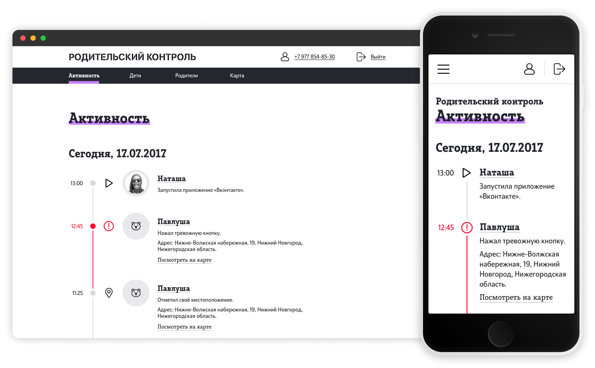
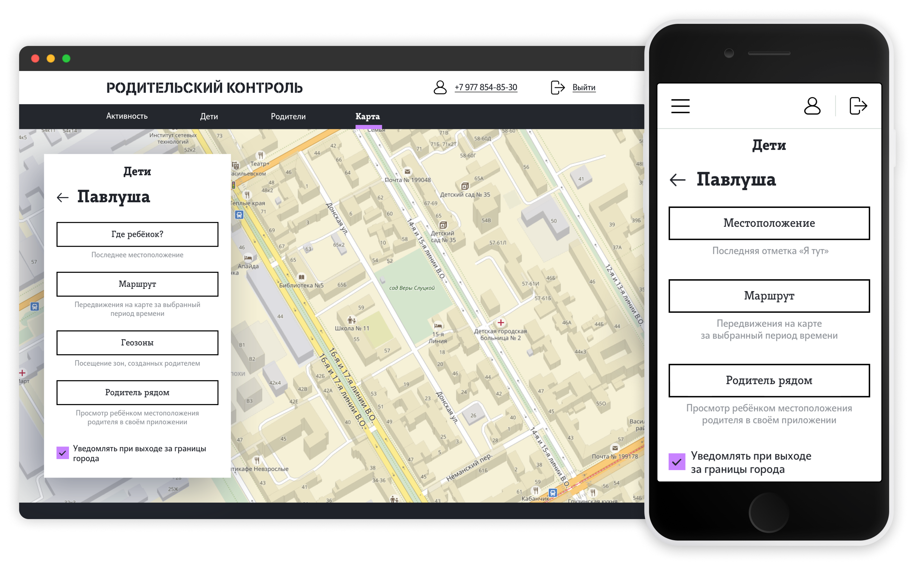
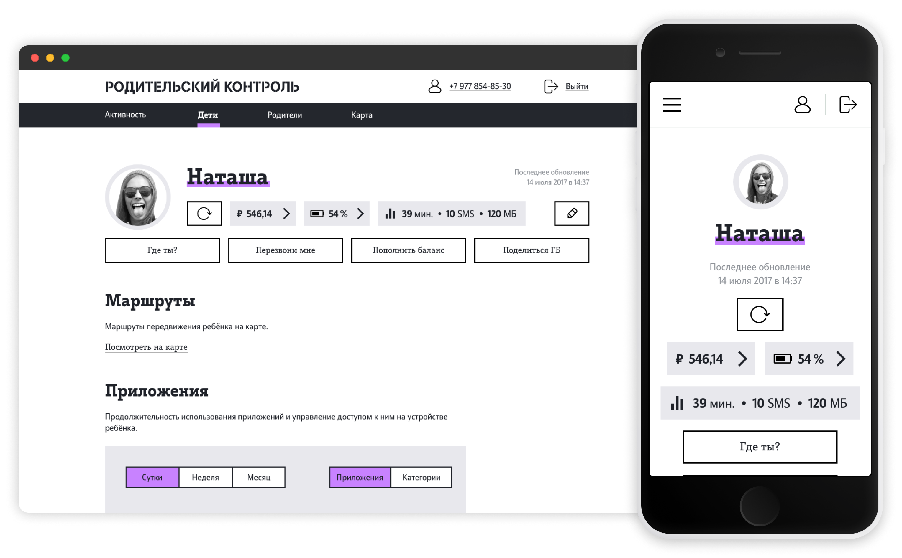
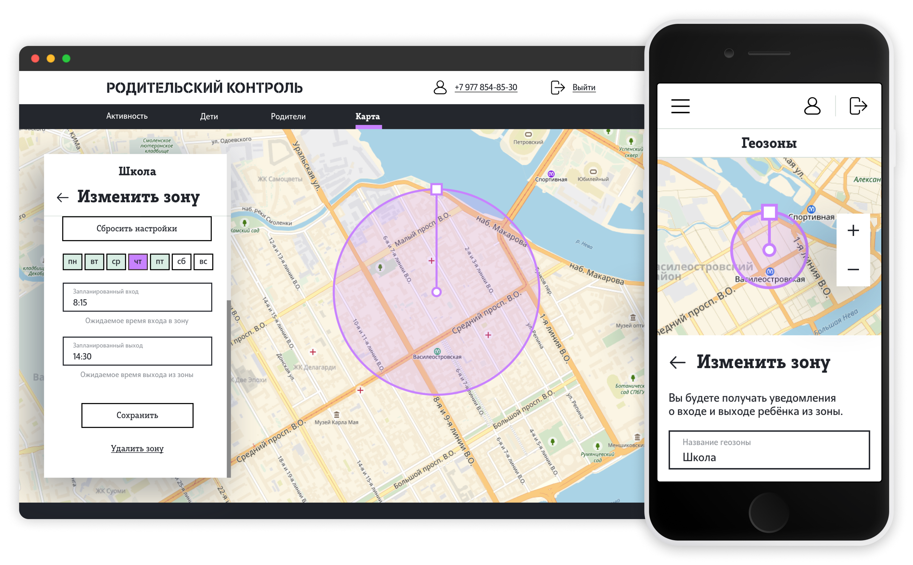
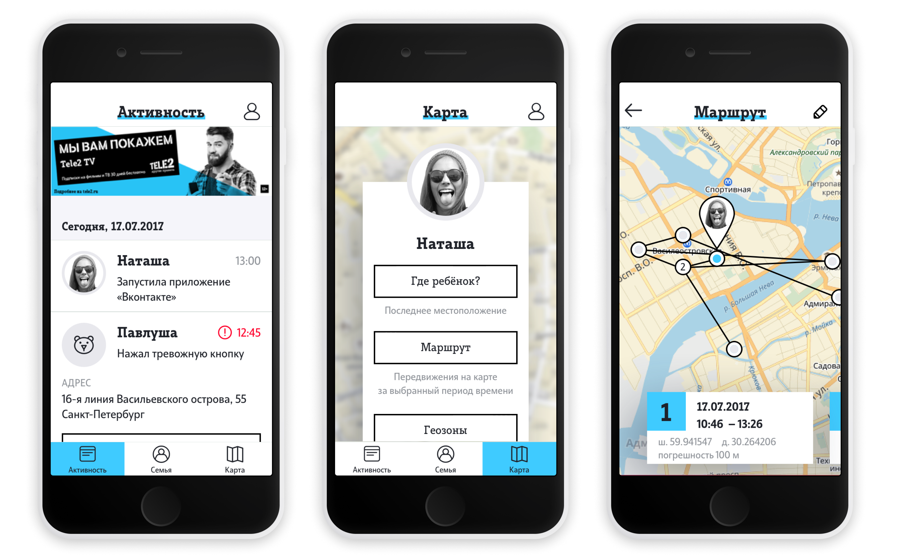
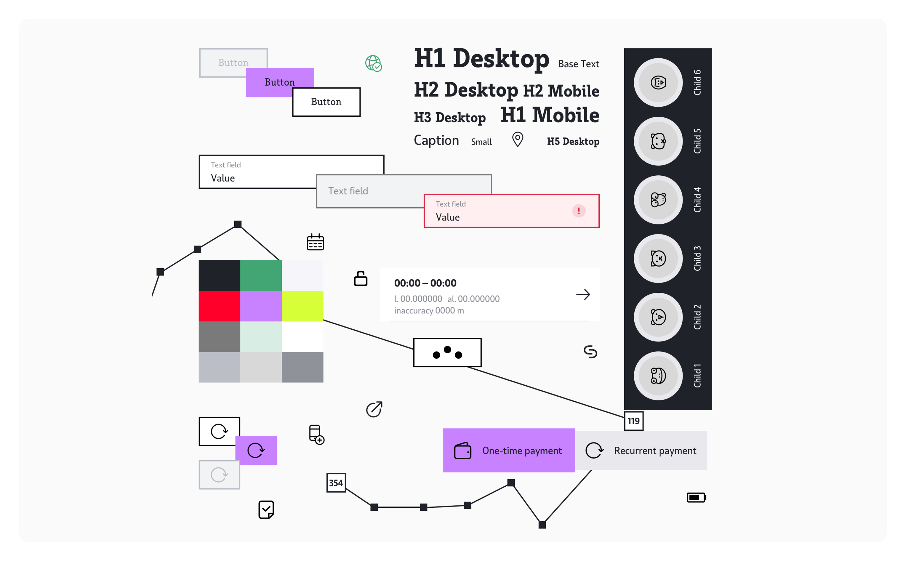

Tele2 Родительский контроль
2017
2017
Сервис Tele2 для контроля активности и местоположения детей, позволяющий поддерживать семейную безопасность.
Продукт строился на данных мобильного оператора и предоставлял доступ к информации о перемещениях и использовании устройства.
Я отвечал за проектирование интерфейсов и разработку UI-библиотеки, так как готовой дизайн-системы у Tele2 не было.

Основной сценарий — просмотр активности ребёнка: запуск приложений, перемещения и тревожные события. Интерфейс строится вокруг временной шкалы, где пользователь быстро считывает происходящее.

Сервис объединяет несколько ключевых сценариев: просмотр текущего местоположения, анализ маршрутов, контроль активности и быстрый доступ к действиям.
Помимо веб-сервиса, разрабатывались приложения для iOS и Android. На обеих платформах были предусмотрены две версии: для родителя и для ребёнка. Я создал первоначальный дизайн для родительского приложения на iOS.

Экран профиля объединяет информацию о ребёнке и основные действия: проверка баланса, активности и быстрые команды.

Карта выступает центральным элементом продукта — через неё пользователь взаимодействует с большинством функций, связанных с местоположением ребёнка.
Отдельное внимание уделено геозонам — пользователь может задавать безопасные зоны и получать уведомления при входе или выходе ребёнка из них.


В проекте не было готовой дизайн-системы, поэтому я разработал UI-библиотеку с нуля, опираясь на бренд-гайдлайны и визуальный стиль Tele2 того периода.
Это позволило сохранить целостность продукта на всех платформах и собрать единый визуальный язык для веба и мобильных приложений.